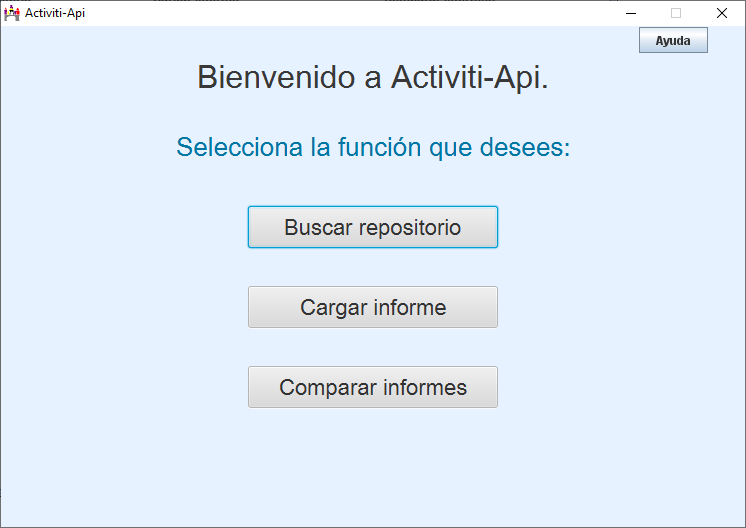

Lo primero que vemos al iniciar la aplicación es una pantalla con un menú superior que contiene las funciones que la aplicación es capaz de realizar:
Operaciones, que contiene las funciones de analizar, importar un fichero o comparar dos ficheros.
Ayuda que muestra esta misma ayuda.
About, que muestra información sobre el desarrollador.
